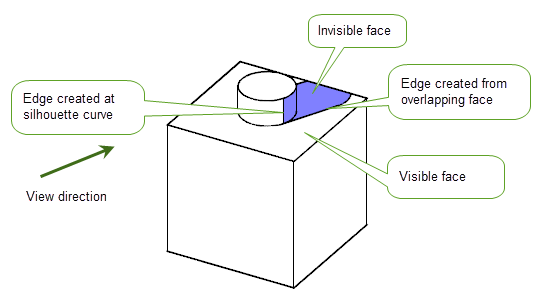

| |
Shadow Curves |
| <<< Lofting | Chapters | Creating Emboss Features >>> |
You can use PK_BODY_imprint_cus_shadow to split the faces of a collection of bodies as necessary so that every face is either wholly visible or wholly invisible (including edge-on faces) when viewed from a specified view direction. Figure 42-1 shows the effect of doing this.
Possible uses of this functionality include (but are not limited to) rendering of shadow effects, picking, ray tracing, and more complex analysis of the profile of a part from a given view direction.
|
Note: This functionality does not support facet geometry. |
Figure 42-1 Imprinting curves on a set of bodies to divide them into visible and invisible regions
This function receives the following arguments:
n_bodies |
|
|
An array of length
If a given body does not need to be transformed, its corresponding entry in
If |
|
|
The view direction used to calculate the position of the imprinted curves. |
|
|
A PK_BODY_imprint_cus_shadow_o_t structure containing a set of options: See Section 42.1.2, “Summary of options”, for more information |
This function returns the following arguments:
Each returned edge is created in one of two ways:
view_direction
.
view_direction
, dividing it into visible and invisible portions.These are illustrated in Figure 42-2.
Figure 42-2 Creating edges from silhouette curves and overlapping face
The following table summarises the options that are available for PK_BODY_imprint_cus_shadow.
|
Whether to return visible faces. Default is PK_LOGICAL_false. |
|
|
Whether to check modified faces for faults. This option takes two values:
|
| <<< Lofting | Chapters | Creating Emboss Features >>> |